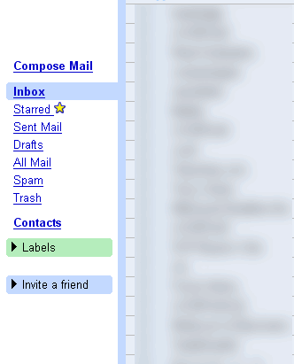
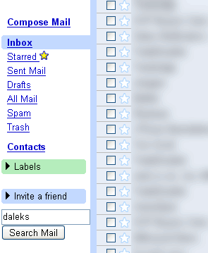
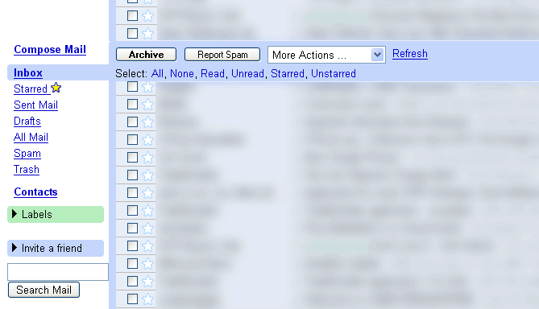
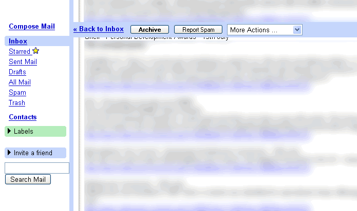

Install for( FFox 1.0.x) : Right Click here and select "Install User Script" (not supported anymore, please install Fireforx 1.5 and Greasemonkey 0.6.4)
Install (FFox 1.5RC1 + GM 0.6.4 Only) : Right Click here and choose install user script (install over previous copies) (do a forced refresh to make sure you have the latest file)
The aim of this script is to allow the left hand side navigation menu in Gmail to be "fixed". As the user scrolls down a page, the menu on the left of the page stays in view
I have also added a search box to the bottom of the menu, and now after a request have made the top navigation bar stay fixed too so it stays visible in long emails/conversations.
You can still install the older versions. Just see the changelog section
To upgrade click "Tools" -> "Manage User Scripts" from the Firefox main menu. If you see a script named "Google GMAIL Fixed Left Menu +Search" you can just install the new version and it will be updated. If the script is named "Google GMAIL Fixed Left Menu" select it and click "uninstall". Click "OK" then proceed to install the updated copy.
If anyone wants a "Search the Web" button too they can edit the code themselves or email me at the address below and I'll try and make another version for you. (or I may do it anyway :) )
It just makes the "position" css value of the menu to be "fixed" and not "absolute".
The search box was slighlty more tricky than copying the existing search box form at the top of the page and inserting it at the bottom of the menu. The actual search function gets the search query from the top search box, so when you click search on the left menu it puts the search query into the top search box before it performs the search.
The top navigation bar involved a few things. In a folder (e.g Inbox view) the div holding it to be fixed, when viewing an email it is held in an table with no id, so you have to iterate to get the first table with the relevant className (there are 2: the top and bottom naviagation bars, hence why we stop after the first one). Once the relevant item has been fixed the table holding the list of emails in the inbox must have a margin added to the top to move it down into view, and in an email the div holding the title has to have some padding applied to the top to move it down into view. (there may be a more efficient way of doing this last bit, especially for different font sizes. email if you know - i've tried position: relative; but that doesn't work, at least on its own - although using em and not px works ok).
I Found Dive Into Greasemonkey very useful in learning how to make Greasemonkey scripts.
Original Version; Version 0.2 with search bar too;
 
Version 0.3 with scrolling top menu bar in the inbox;

version 0.3 reading a long email

Any Comments then email me @
Install FFox 1.0.x Version: Right Click here and select "Install User Script" (not supported anymore, please install Fireforx 1.5 and Greasemonkey 0.6.4)
Install (FFox 1.5 + GM 0.6.4 Only) : Right Click here and choose install user script (install over previous copies) (do a forced refresh to make sure you have the latest file)
----------------------------
Version 0.45
----------------------------
17th June 2006
-----------------------------
Fixed the top 'toolbar' as before.
----------------------------
Version 0.44
----------------------------
6th June 2006
-----------------------------
The top of emails and folders had a massive gap, fixed the internal styles to work.
----------------------------
----------------------------
Version 0.43 - Bug Fix Update - Right Click here and select "Install User Script" (FFox 1.5 + GM 0.6.4 Only)
----------------------------
9th December2005
-----------------------------
Version 0.42 Stopped working in firefox 1.5 and greasemonkey 0.6.4
Version for firefox 1.0.x no longer supported - although hopefully it still works.
----------------------------
----------------------------
Version 0.42 - Bug Fix Update - Right Click here and select "Install User Script" (FFox 1.5RC1 + GM 0.6.3 Only)
----------------------------
4th November 2005
-----------------------------
Fix for FFox 1.5RC and greasemonkey 0.6.3 only, install copy for FFox 1.0.x for other versions of Firefox.
----------------------------
Version 0.41 - Bug Fix Update - Right Click here and select "Install User Script"
----------------------------
30th October 2005
-----------------------------
Fixed to make width only 100% (google made their adverts bigger)
Fixes adverts so top menu doesn't get hidden by adverts
----------------------------
Version 0.4 - Right Click here and select "Install User Script"
----------------------------
22th July 2005
-----------------------------
To use with the GMail Smart Delete Button script, this script must be installed second (may work either way).
Fixes pages not reloading properly etc
----------------------------
Version 0.3
----------------------------
17th July 2005
-----------------------------
Keeps top menu fixed too, few other minor fixes (also applied to version 0.2 + 0.1)
-----------------------------
Version 0.2 - Right Click here and select "Install User Script"
----------------------------
16th July 2005
-----------------------------
Added Search Box
-----------------------------
Version 0.1 - Right Click here and select "Install User Script"
----------------------------
15th July 2005
-----------------------------
Initial release